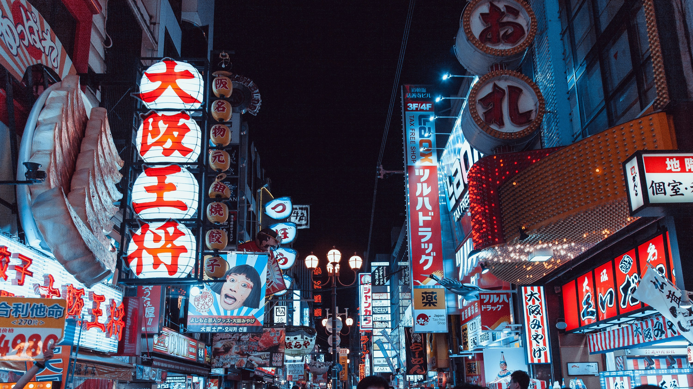

Photo Activities
Travel Photography Portfolio
A collection of photos that capture the beauty of Japan.
Meet the Photographer →
Photo Activities
"Photography is the art of frozen time — the ability to store emotion and feelings within a frame."— Meshack Otieno